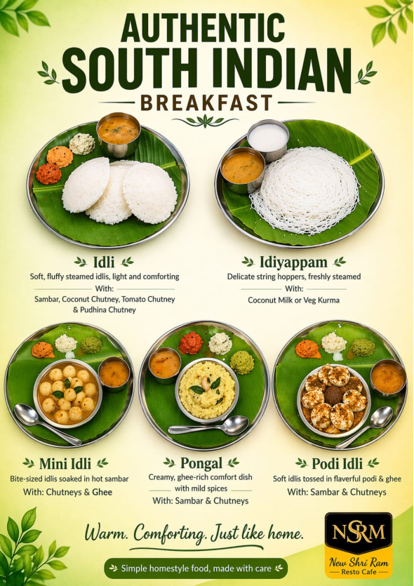
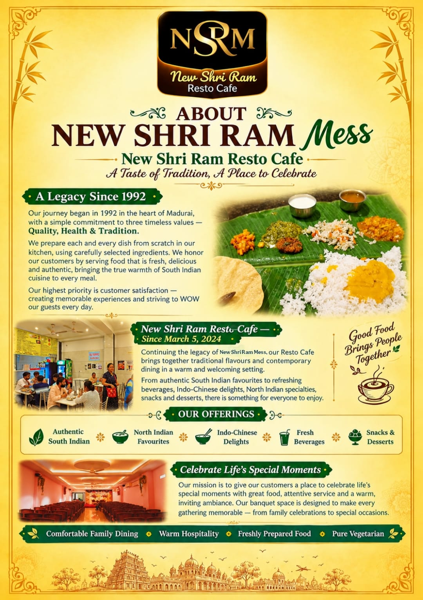

★★★★★
“The food was really good. Honestly, one of if not the best food we've had so far in south India! The service was amazing also.”
Arthur GomesEuropean traveller · Highly
recommends
Since 1992 · Madurai
From a crisp dosa at sunrise to a warm family feast, every plate is made to feel like home.


The heart behind the plate
Our journey began in 1992 with a simple promise: serve food made with quality, health and tradition at its heart.
Today, New Shri Ram Resto Cafe carries that legacy forward with honest flavours, warm hospitality and a place for families to celebrate life together.
Come sit with us ↗Kind words from our guests
Good food brings people together. These are a few of the people who came, tasted and returned.
“The food was really good. Honestly, one of if not the best food we've had so far in south India! The service was amazing also.”
“One of the best and ultimate place for south Indian food, service is very good, staff behavior is excellent.”
“Very good taste of South Indian food, it feels like we don't stop eating.”
“Thankyou Sri Ram..im totally satisfied... your food, customers treated very well. I come again and again with my family or friends.”
“Paneer butter masala and mushroom fried rice was very very delicious.”
“1st class service at an affordable price compared with other restaurants. Must try once in Madurai.”
“A nice place for having food. Must try for all people. Best family veg hotel near the railway station in Madurai.”
“Good food at reasonable price. Though language was a barrier for us, the staff were polite enough to help us throughout.”
Come find us
1, Kaka Thoppu St, Madurai Main
Madurai, Tamil Nadu 625001
No wait · All vegetarian
Free street parking